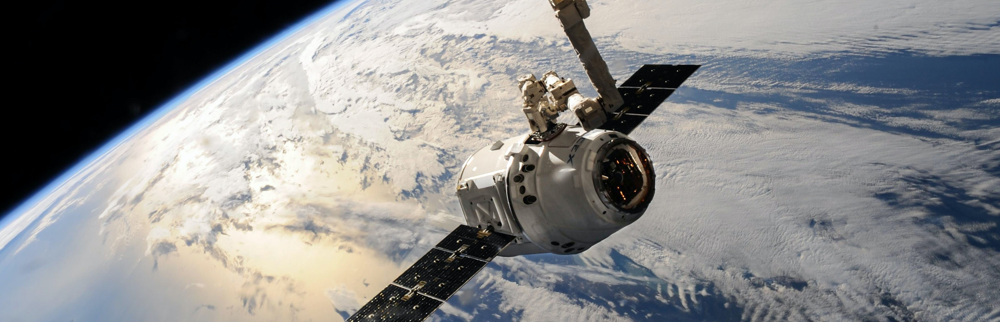

Inhabiting Space?
A Brief Introduction
Earth. It’s a cool place right? With its recyclable resources, and people too meet and see, its never ending opportunities right? Its pretty cool, for now.
With Climate change, and not that much global change in our actions towards our environment, water levels rising, using resources to an extent that we can’t replace them, carbon emissions higher than even in history, “above 400 particles per million will kill us” and on and on and on it goes. We’ve all heard the call to action, to help the earth before it becomes uninhabitable, and we can’t sustain ourselves.
Now, there have been, throughout our history 2 ways of tackling this problem. We either use our technology on the planet to keep us sustainable, and try not to mess up our natural environment too much. Or, as Elon Musk has outlined (which was said in his biography by Ashley Vancee) that there is the other situation, where humans inevitably can’t save the planet from its irreversible state, and to survive and not die out, we would need to move to another inhabitable space and live there as a collective species. Of course, our most ideal situation is the former option, where we finally manage to push down a system that helps aid the planet in the long run, but in that case of failure, as a species we need a system to get to other planets and travel there.

With the opening of SpaceX, run by Elon Musk, he had this exact intention in mind as a longer term goal. With SpaceX on the rise with new reusable rocket technology, which is MUCH cheaper than rebuilding rockets (as 95% of costs generally go towards building it, and the last few percentages go towards storage and on board supplies), humans now have a much feasible way to travel to space. With the new mission (2017) to get the first humans to mars by 2024 in a vehicle called the ‘starship’ (yes, it sounds like Star Trek), we are already moving in leaps and bound towards making vehicles that can get us to other planets.
If you're interested, here is the link to SpaceX's Website which give frequent updates on their latest missions and technology, you should check it out!
So, how do you legally inhabit a planet?
But with this new ability to travel to new planets, and inhabit new spaces that we have never been to before, there are a TON of legal and ethical issues that stand in our way. From a legal stand point, we have to ask ourselves, what legal laws do we have to set up on these planets? Currently, as a whole species, we do have set of rules and laws that embody how we should act towards each other (the declaration of human rights), but even with these rights are only specific to countries part of the UN, so still many countries in the middle east, like Saudi Arabia, and others like North Korea don’t fall under the umbrella that these rights fit under. With each of these countries having their own unique set of laws that are not specific to everyone, who’s laws do we follow? What happens when there are crimes that occur on another planet? What follows?
"We must colonise Mars to preserve our species..." - Elon Musk
Some more about Mars...
Currently, spaces like Mars are acting under Maritime Law – so Mars is counted as ‘international waters’. But obviously these laws are only specific to laws on the sea, so what happens when numerous numbers of people inhabit planets? We would probably need a whole new set of laws, set of rules, jurisdictions and powers to even create these laws (which would take years to deliberate) and then act upon them.
And who has the power in creating these laws? Would it be countries with the most global power as of today, or the ones with the most space systems set in place, or the ones as part of the UN? And who decides what’s best for humanity? Mathematicians? Scientists? The people who invested in the companies? The people who are most informed? If so, who are they? The Arts? We have yet to even start this discussion, as the idea of reaching another planet is rather intangible, but with every growing technology, we as a species will be there sooner than we think, and discussion will have to be created to address these integral problems.
Heres a handy link to an interesting article by The Guardian all about Musk's interview and his thoughts on colonising Mars.

So... is inhabiting a planet ethical?
Oh and you thought we were done? We only just covered legal issues, we’ve still got Ethical issues to face. On the topic of ethical issues, there is one main one that we all have to consider – is it ethical to inhabit another planet? A majority of people would say yeah, its pretty fair, because in the end it would be our inhabitancy of another planet, and our own survival is essential to continue the human race. But in the case of bringing our own life to another planet with life already on it? Is that now ethical, to be taking over their space, which previously would have gone unharmed and undisturbed, and the species would have effectively evolved on its own, is ethical than to take over their space, and inevitably changing the course of their life and development as an extra terrestrial species?
Here, I’m not taking full blown out aliens, but considering of what we already know about how our own life started (with amino acids, and then proteins, which ten developed into microbes that are so small that you can’t see with the naked eye), I’m talking about those microbes that could be lurking on another planet, that we may have already seen.
“This is a significant development, as it appears to confirm that water -- albeit briny -- is flowing today on the surface of Mars.” - John Grunsfeld, an associate admin of one of NASA's missions.
Scientists have been discussing for years, as to whether there was a possibility of life ever being on Mars, and after millions of years, its atmosphere got stripped, leaving it the barren desert that it is now? Humans have seen so called ‘water marks’ or these trailing lines carved into the rocks and dust on mars which look uncannily similar to what’s created on earth by rocks and water, which created the discussion of ‘was there ever water on Mars?’ We know now, that there is solid water (ice) on the poles of mars, called the Ice Caps, that are basically water sinks that have managed to stay there. And after many, many years of searching, a breakthrough in 2017 found that, yes, although a very small amount, liquid water in fact flows on Mars, but definitely not in the quantities that it used to. And due to our knowledge of how water is essential for our life as humans, we ask the question, because there possibly was once water on mars, is there a possibility of life every living there? And since there is ice on mars, is there a chance that life is still there on mars? Maybe in the form of microbes and proteins that started life here on earth, by tampering with the red planet, have we ultimately tampered with the chances of life ever forming on the planet? And if so, was our ‘tampering’ by leaving rovers (4 of them, and communication systems, with the new one called ‘Perseverance’ going to launch (hopefully) in July of this year) was it worth it for our research and need for information, to supposedly bias the chances of a species forming?
Here's a cool article that outlines when they discovered the free flowing water on mars, only recently in 2017.
Yes, this may all seem far fetched, but one of NASA’s missions is to ultimately find out whether there is life out there in the universe, or are we really just alone out in the big vacuum, and if we are really on the search for life, we have to tread carefully where we step, to make sure that we really are considering every option before we jump the gun when making, possibly life altering decisions up there in the vast universe.

References - these articles are cool, you should have a look!
- https://er.jsc.nasa.gov/seh/social.html
- https://www.theguardian.com/technology/2018/mar/11/elon-musk-colonise-mars-third-world-war
- https://www.nasa.gov/press-release/nasa-confirms-evidence-that-liquid-water-flows-on-today-s-mars/
- https://mars.nasa.gov/mars2020/mission/science/goals/
The cool images I used -
- https://www.pexels.com/photo/white-outer-space-satellite-586056/
- https://www.pexels.com/photo/space-rocket-orbit-galaxy-23769/
- https://www.pexels.com/photo/gray-and-white-robot-73910/